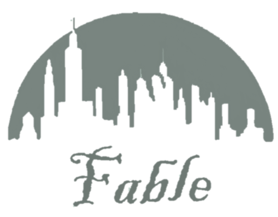

Class Projects
CamlBattle
- CS 3110 - Data Structures and Functional Programming
- 3-member team
- Game similar to Pokemon
- Made using OCaml
BTS's Discograpy Website Database
- INFO 2300 - Intermediate Design and Programming for the Web
- Designed and implemented a website that showcased a database of the musical band, BTS’s, discography.
- Built with HTML, CSS, PHP, and SQLite
News App
- Made as the final project for an Intro to iOS Development course.
- The app used the Cocoapod Alamofire to make calls to the NYT API using the search words inputted by the user.
- The JSON retrieved from the calls is decoded and displayed as an article name and snippet in a TableView, with each article in a separate TableViewCell.
- The TableViewCell can be clicked to display a DetailView with the article name, a snippet of the article, an image, and a clickable link.
Martha's Cavern
- CS 2110 - Object Oriented Programming and Data Structures
- Two-member team
- Planned an escape route for an avatar in a randomly generated map.
- Optimized gold collection with a limited amount of steps using Dijkstra’s algorithm.
- Built using Java
Hackathons
Expiration Exploration
- Big Red Hacks September 24th to 26th, 2021
- Created and pitched project Exploration Expiration with 3 other team members
- Mocked on Figma.
- Presented live twice.

Snoot
- Hack Our Campus Hackathon August 28th-30th, 2020

Fable
- Digital Agriculture Hackathon in Spring 2020.
- Created and pitched the project FABLE with 5 other team members
- FABLE aims to decrease waste in the food chain by connected farmers and consumers directly on an e-commerce style platform.
- Prototyped a mock-website using HTML and CSS to demonstrate the basic functions.